프림 알고리즘은 임의의 시작 정점을 정하고 간선의 집합은 없는 상태에서 아래의 조건을 만족할 때 간선을 하나씩 추가하는 알고리즘이다.
조건1. 신장트리와 연결 된 간선들 중 가중치가 가장 작아야 한다.
조건2. 신장트리와 연결 된 간선들 중 순환을 발생시키지 않는 간선을 선택해야 한다.
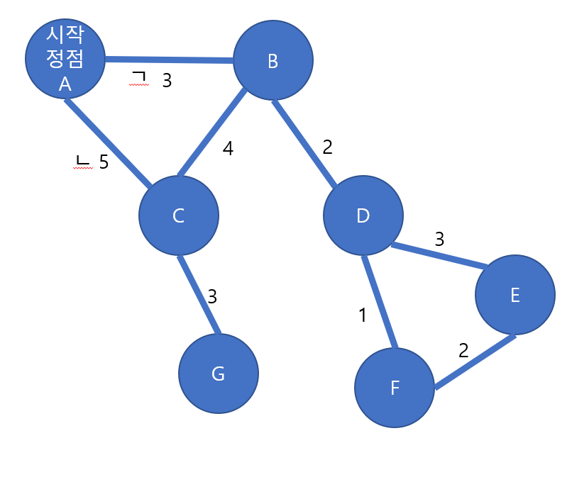
이러한 신장트리가 있을 때 프림 알고리즘을 사용하여 MST를 구하기 위해서는 우선 임의의 시작 정점을 정하여야 한다.
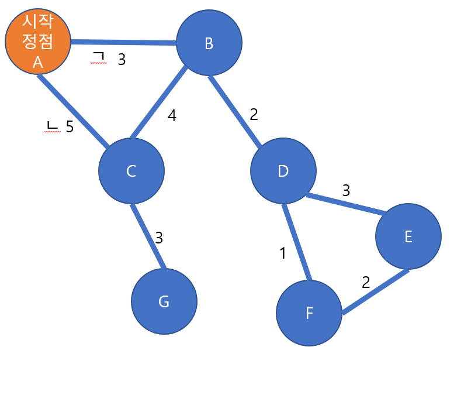
1. 시작 정점 정하기
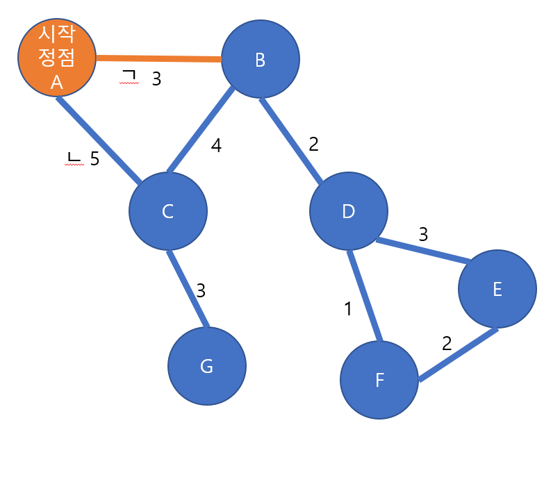
2. 최소 가중치 간선 추가
시작 정점을 A라고 했을 때 최소 가중치를 가지는 간선으로 추가하기 위해서는 ㄱ과 ㄴ 중 ㄱ을 선택하여야 한다.
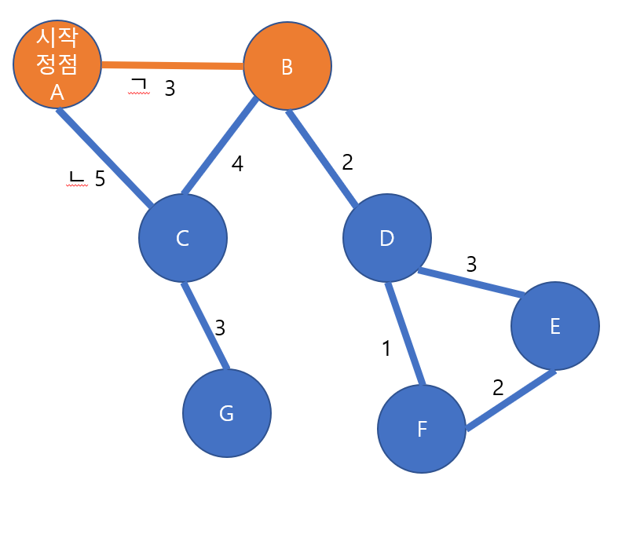
3. 간선과 연결 된 정점 추가
이를 모든 정점이 신장트리에 포함될 때 까지 2,3을 반복한다.
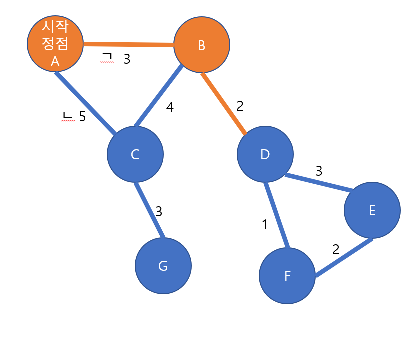
2. 최소 가중치 간선 추가
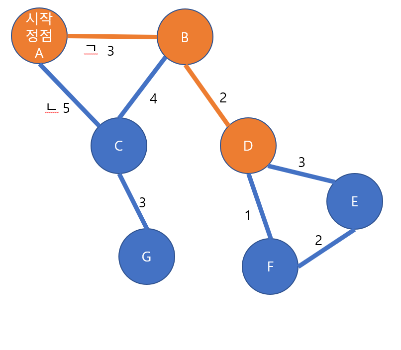
3. 간선과 연결 된 정점 추가
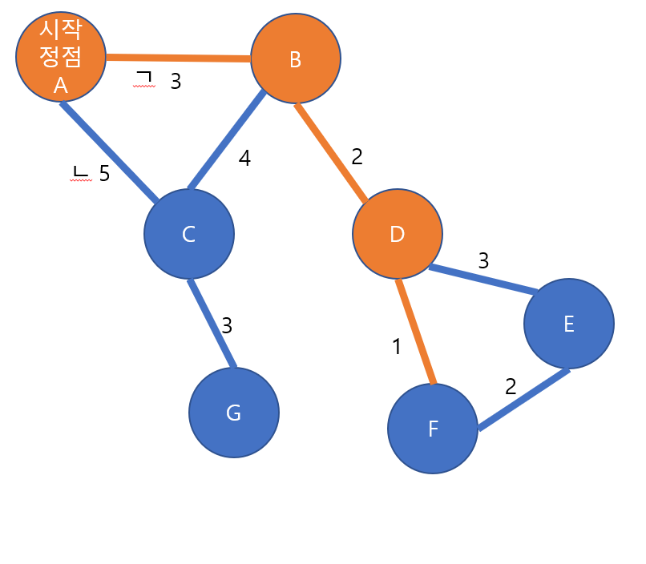
2. 최소 가중치 간선 추가
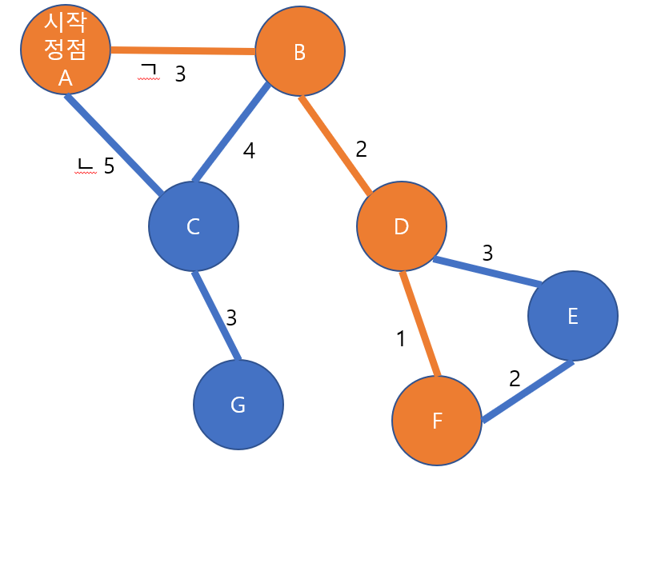
3. 간선과 연결 된 정점 추가
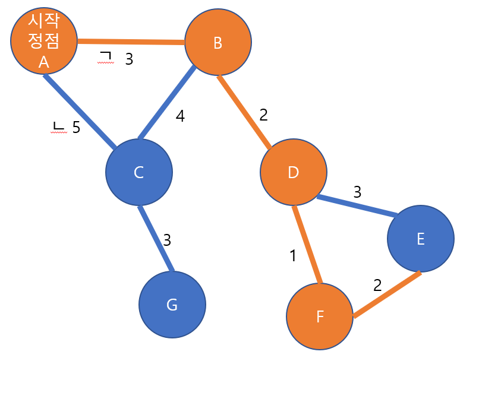
2. 최소 가중치 간선 추가
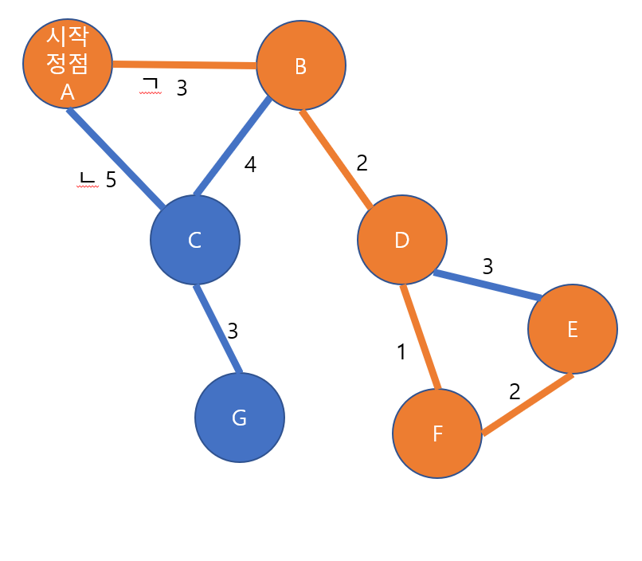
3. 간선과 연결 된 정점 추가
프림 알고리즘은 모든 정점을 추가해야 하기 때문에 C를 추가하기 위한 최소한의 간선을 선택하여 C를 추가한다.
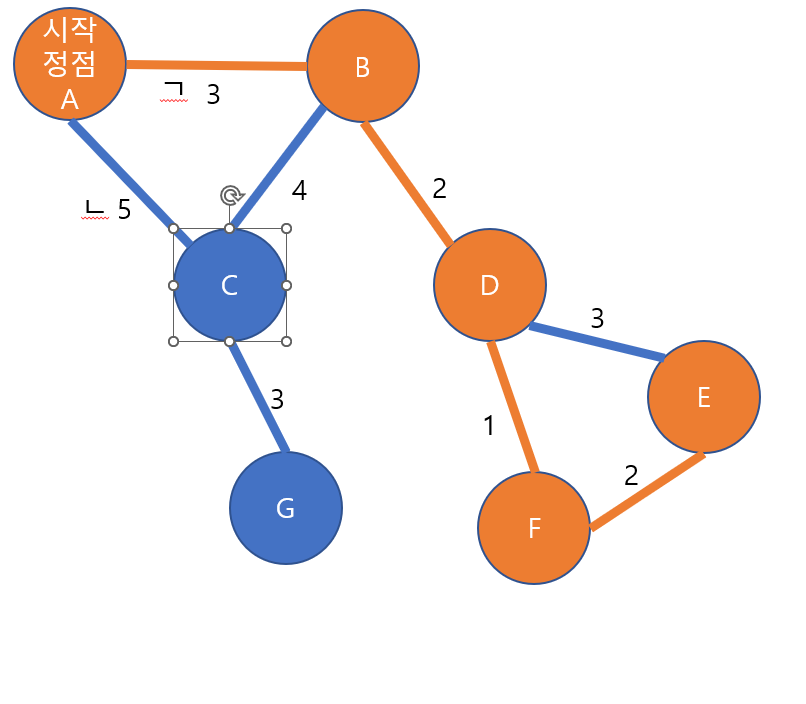 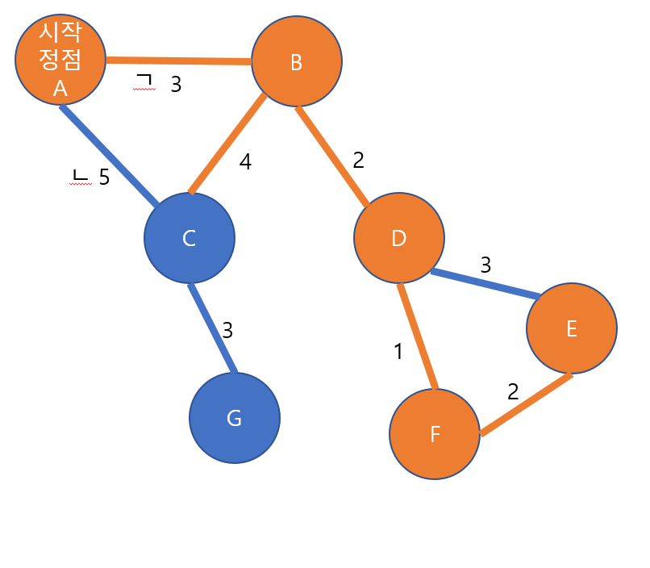 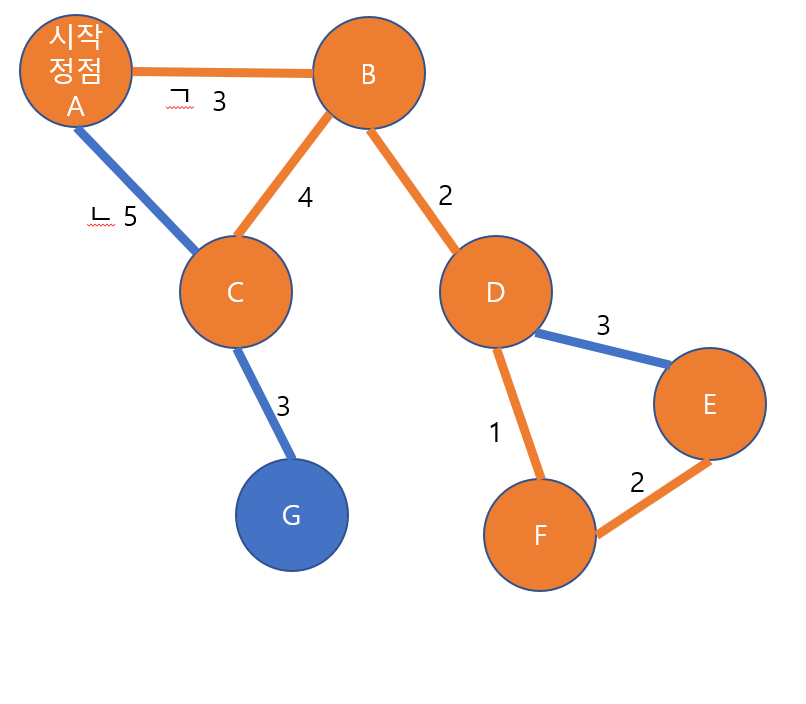
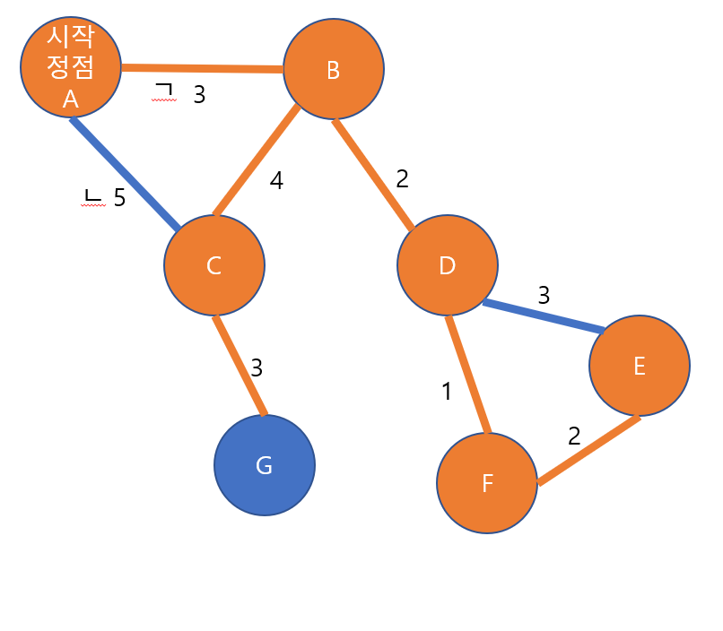
2. 최소 가중치 간선 추가
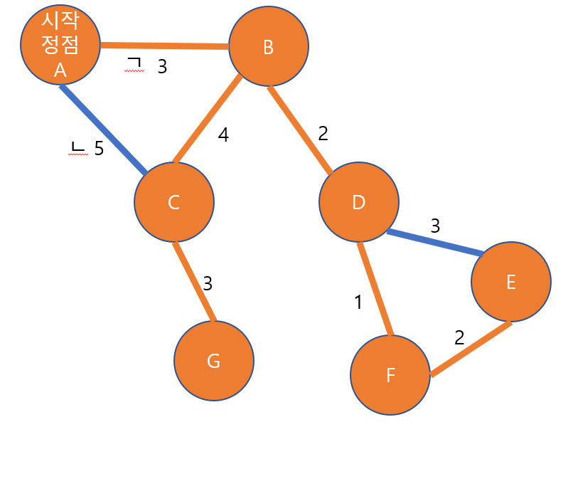
3. 간선과 연결 된 정점 추가

모든 정점이 추가될 경우 MST가 완성이 되며 이 때 가중치는 3 + 2 + 1 + 2 + 4 + 3 = 15이다.